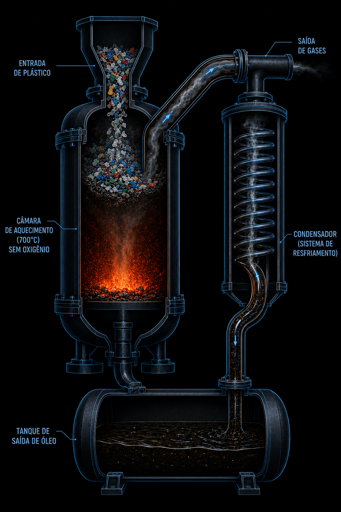

🌱
Ambiental
Reduz o acúmulo de lixo em aterros e oceanos e evita a abertura de novos poços de petróleo, diminuindo riscos de vazamento.
Transformar resíduos plásticos em óleo combustível através da decomposição térmica sem oxigênio — reduzindo poluição e recuperando energia.
O crescimento acelerado da produção e do descarte inadequado de plásticos é um dos maiores desafios ambientais da atualidade. Grande parte desses resíduos não é reciclada e acaba em aterros, rios e oceanos.
de plástico produzidas no mundo desde 1950.
Apenas 9% de todo esse plástico foi reciclado.
Temperatura da pirólise que "reverte" o plástico em óleo.
Fonte: Geyer, Jambeck & Law (Science Advances, 2017); Pinto et al. (2012).
A pirólise é a decomposição térmica do plástico em um ambiente sem oxigênio, a temperaturas de até 700 °C. Como o plástico é feito de hidrocarbonetos — as mesmas moléculas do petróleo — ele se decompõe em três produtos: óleo combustível, gases e carvão.
Espaço reservado para o vídeo de animação
Substitua no index.html pela Opção A (arquivo assets/animacao.mp4) ou Opção B (YouTube).
O reator converte o plástico em óleo em quatro etapas. Passe o mouse (ou toque) nos pontos do diagrama para entender cada uma.

Plásticos triturados (PE, PP, PS) são inseridos no reator pelo funil de alimentação.
Sem oxigênio, o calor quebra as longas cadeias de hidrocarbonetos — o material não queima, se decompõe.
Os gases resultantes sobem e passam pelo condensador (sistema de resfriamento), voltando ao estado líquido.
O óleo combustível condensado é recolhido no tanque de saída, pronto para uso ou refino.
A qualidade e o rendimento do óleo dependem do tipo de plástico usado.
Alto rendimento de óleo com características próximas às dos combustíveis reconhecidos pela ANP.
Pouco indicados: geram poucos produtos úteis ou liberam compostos perigosos.
Reduz o acúmulo de lixo em aterros e oceanos e evita a abertura de novos poços de petróleo, diminuindo riscos de vazamento.
Transforma resíduo sem valor em óleo combustível, gases e matéria-prima para a indústria química.
Os produtos podem virar lubrificantes, insumos químicos e até nanotubos, fechando o ciclo dos materiais.
O uso de catalisadores baixa a temperatura necessária e melhora a qualidade do produto final.
Pesquisa qualitativa, do tipo revisão bibliográfica, de caráter teórico-exploratório. Sem experimentos laboratoriais, sem envolvimento de seres humanos ou animais.
Levantamento em bases científicas (Google Acadêmico, Brazilian Journal of Development, Revista FT, Revista de Geopolítica, UFF, UFSM).
Seleção por relevância: artigos Qualis, dissertações e TCCs de instituições federais.
Leitura crítica e organização em tópicos temáticos: processo, tipos de plástico, variáveis e viabilidade.
Contraste de ideias para identificar convergências e divergências na literatura.
Definição do problema de pesquisa com a professora.
Estudo de caso, objetivos e fundamentação teórica.
Aprofundamento das pesquisas e orientação.
Revisão final e submissão do projeto.
Desenvolvimento do app/site com o coorientador do SENAC.
Correções, testagem e versão final do projeto.
Apresentação do protótipo na feira de conhecimento da instituição.